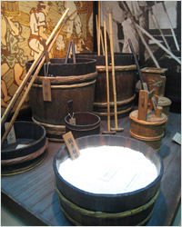
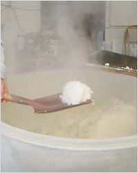
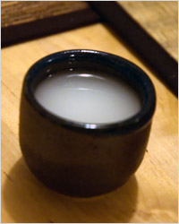
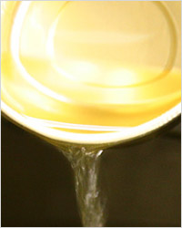
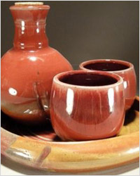

Что такое сакэ

Саке́, сакэ́ – знаменитый японский крепкий алкогольный напиток на основе риса. Первые упоминания о крепком рисовом напитке появились около 10 000 лет назад в Китае, а его потомок – сакэ - появился в Японии около 2 000 лет назад, и за это время трудолюбивый и терпеливый японский народ смог достичь совершенства в его производстве. Технология приготовления роднит сакэ с пивом, но иногда его называют «рисовое вино» или «рисовая водка». Однако сакэ – это вовсе не водка, вино или пиво, а совершенно особый вид алкоголя. Сакэ настолько уникален, что к нему не подходят европейские названия, как и способы приготовления. Его ни с чем не сравнимый вкус получается за счёт использования специальных сортов риса, а готовый напиток пьют как горячим (до 60°С), так и холодным (около 5°С). Сакэ используют в традиционной японской кулинарии, как средство, устраняющее сильные или неприятные запахи.
Сакэ, как и многие популярные напитки, имеет богатейшую историю. Вот уже два тысячелетия как на Японских островах готовят этот интересный напиток. Есть несколько версий возникновения этого напитка, но за давностью лет довольно сложно определить истину. Рис - главный компонент, из которого готовится сакэ, был известен уже в глубокой древности. В Китае, откуда рис проник в Японию, уже в 8 веке до нашей эры был популярен напиток из риса или, как его ещё называют, «рисовое вино». Пили его знатные жители и придворные во главе с императором. Эту практику японцы перенесли к себе на родину и улучшили технологию производства рисового вина, да и сам напиток со временем стал одним из нескольких видов элитного алкоголя в мире.

Слово «сакэ» имеет долгую историю, отображающую перемены образа жизни и технологий. Существует несколько точек зрения на происхождение этого слова, каждая из которых имеет весомые обоснования. Все они сводятся к тому, что изначально для обозначения напитка использовалась целая фраза, которая со временем сократилась до одного длинного слова, а то, в свою очередь, стало таким коротким, что содержит всего два слога. Видимо, слово, обозначающее напиток, достаточно древнее, и все трансформации для его упрощения свидетельствуют о его частом использовании, что косвенно говорит о сакэ, как о важном элементе жизни японцев.Одна из версий гласит о том, что сакэ или его пранапиток стали изготавливать в 4800 году до нашей эры в Китае, на реке Янцзы. Через некоторое время напиток попал на японские острова, где и прижился. Китайская летопись Вэй-Чжи 3 века нашей эры повествует о стране Яматаи, в которой при погребальной церемонии пьют некое рисовое вино. Есть ещё одно упоминание в хронике Нихонги в 720 году. В ней говориться о том, что подданные императора Сюдзин поклоняются богу рисового вина Омива-но Ками. В сложной иерархии японских мифологических персонажей есть ещё несколько имён, связанных с «рисовым вином». Сведений об истории и пути распространения сакэ довольно мало. Однако известно, что сакэ готовили не только из риса. В южном Кюсю, например, сакэ делали из картофеля, а в Окинаве – из сахарной свёклы. Со временем основным сырьём для сакэ стал крупный длиннозёрный рис особого сорта.

Поначалу сакэ готовили не совсем гигиеничным образом – пережёвывали рис и сплёвывали эту массу в ёмкость для брожения. Кроме риса,жевали жёлуди, просо и каштаны. Эта смесь начинала бродить, слюна выступала катализатором брожения и образования сахара. Такой сакэ назывался kuchikami no sake, (буквально – сакэ, жёванный во рту), был с низким содержанием алкоголя и употреблялся в виде кашицы. Такой «напиток» продержался несколько веков, после чего японцы вывели особый грибок kojikin, который превращал рисовый крахмал в сахар. При этом рис после воздействия грибка становился солодом, и оставалось только добавить дрожжи shubo, чтобы начал вырабатываться спирт. После открытия грибковой культуры процесс пережёвывания риса перестал быть необходимым элементом приготовления сакэ, а заметно повысившийся «градус» напитка только подстегнул поиски новых способов улучшения его качества. В эпоху Хэйан в 8-12 веках в технологии приготовления сакэ появился ещё один этап, с помощью которого крепость напитка ещё больше повысилась, а вероятность скисания уменьшилась. Последующие столетия не прошли даром – за это время мастера приготовления сакэ научились управлять процессом брожения и кроме этого стали применять некое подобие пастеризации – скисшее сакэ заливали в резервуары и прогревали. Но этот способ сохранения сакэ японцам пришёлся не по вкусу – качество напитка значительно ухудшалось. И только через 500 лет француз Луи Пастер откроет «пастеризацию», которая значительно изменит кухни многих народов земли, не исключая и японскую.

Пик производства сакэ пришёлся на период Эдо (17-19 века). В это время появляется рекордное количество сакэварен, которые расположились в префектурах Киото, Осака и Хего. Весь процесс заготовки и переработки сырья занимал значительное время, был трудоёмким и требовал аккуратности и внимания. Для изготовления сакэ брался крупный длинозёрный рис. Для того чтобы раскрыть его свойства, рис шлифовался или обдирался, теряя от 10 до 50% своего объёма. Затем следовала промывка, замачивание и пропаривание. Часть риса отбиралась на закваску, которая должна выдерживаться в тёплом или даже жарком месте 35 часов. Конечно, закваска не обходится без добавления специального грибка-катализатора koji. Эта культура активирует процесс брожения и высвобождает из риса крахмал, трансформируя его в сахар, за счёт чего и вырабатывается алкоголь. Полученную готовую закваску смешивают с водой, пропаренным рисом и дрожжами и оставляют бродить. Следующий этап – ферментация - длился около 3-х месяцев, по истечении которых напиток очищался и фильтровался (а в современных условиях ещё и пастеризовался).Крепость готового сакэ может быть от 7 до 20 «градусов» и пьётся напиток холодным или горячим. Цвет молодого сакэ может отливать зелёным или иметь лимонно-зеленоватый оттенок, цвет выдержанного сакэ более насыщенный и даже может быть янтарным. Однако обычный цвет сакэ – это светлые тона с желтоватыми или тёплыми оттенками, но не насыщенные, а скорее пастельные. Хотя в производстве применяются два основных компонента – рис и вода, вкус напитка каждой сакэварни уникален, и в стране восходящего солнца существуют тысячи сортов сакэ, каждый из которых обладает своими неповторимыми свойствами и оттенками вкуса. Элитные сорта сакэ могут обладать фруктовыми нотками в букете. Очень сильно на вкус сакэ влияет качество риса. Для «правильного» риса погода в течение года должна быть прохладной и стабильной без перепадов температуры или засухи. Вторым и не менее важным компонентом является вода – она должна быть насыщенной магнием, фосфором, кальцием и калием и почти не содержать марганца и железа.
В современной Японии существует около 2000 производителей сакэ, каждый их которых готовит свой собственный напиток или целую серию сортов. Если поделить сакэ на виды, то наиболее популярным сейчас является очищенный сакэ сейсю, напоминающий по вкусу херес. Этот напиток почти бесцветный и прозрачный. Старики же предпочитают неочищенный сакэ нигоридзакэ, с горьким вкусом и желтоватым оттенком. Сакэ не любит света, именно поэтому его разливают в непрозрачную посуду или алюминиевые банки. Вредны для него и перепады температуры, после нескольких таких скачков сакэ начинает портиться, и его вкус теряет первоначальную свежесть. Сакэ редко выдерживают, вернее, на выдержку идёт меньшая часть от общего количества. Японцы любят пить свежий сакэ, как только тот прошёл очистку. Но и выдержанный напиток ценится за его специфический вкус и сладкий пряный аромат. Нельзя сказать, что с выдержкой сакэ становится лучше – здесь опять же неприменимы винные стандарты. Например, сорт сакэ koshu выдерживают в кедровых бочках несколько десятилетий, в течение которых он темнеет или желтеет, а аромат становится пряным и сладким. Для выдержки берётся сакэ среднего качества, так как тонкий букет свежего элитного сакэ улетучится, а на передний план выступят плотные и сильные ароматы древесины кедра.
Если оценить «видовые» различия современного сакэ, то можно вывести несколько таких основных видов, каждый из которых обладает множеством вариаций или сортов. Во-первых, всё сакэ делится на 2 основных вида: futsu-shu - «обычный сакэ» и tokutei meisoshu - «специальный сакэ». Futsu-shu, как наиболее распространённый сакэ, производится в большем объёме, чем специальное. Это аналог европейских ординарных вин. Другое дело - tokutei meisoshu. В такой сакэ вкладывается всё умение мастера, все накопленные веками знания. Отличительной чертой tokutei meisoshu считается повышенное содержание алкоголя и высокое качество, а также множество сортов. Honjozo-shu – сакэ, в который добавляется небольшое количество спирта, что позволяет раскрыть новые ароматы при брожении. Этот вид сакэ появился в Японии в 60-х годах 20 века, и сам термин служит для отличия высококлассного сакэ с добавлением алкоголя в процессе производства от сакэ, в который просто добавлен спирт для объёма и крепости. Junmai-shu переводится как «чистое рисовое вино» и готовится только из риса. Эта отличительная особенность сорта – ни капли алкоголя и до 30% заранее отшлифованного риса. В ginjo-shu должно быть не менее 50-60% шлифованного риса, а в daiginjo-shu доля такого риса 50% или меньше.

Различается сакэ и методами изготовления. Самый распространенный сакэ Kimoto готовится по особому рецепту вот уже 300 лет подряд. Тщательно выверенные процессы позволяют добиваться стабильного вкуса и высокого качества напитка. Для его приготовления закваска готовится вручную – «отбивается» до пастообразного состояния и оставляется бродить. Yamahai готовится немного по-другому: закваска закисает самостоятельно и бродит в течение месяца. При этом, как утверждается, аромат напитка будет богаче. Sokujo – современный сакэ с ускоренным процессом брожения закваски, в которую добавляют молочную кислоту, при этом он отличается от первых двух более ясным и чистым ароматом. Namazake – непастеризованный сакэ, приготовляемый любым из трёх вышеописанных способов. Genshu –так называемый «чистый сакэ» с 18-20% алкоголя. Nigorizake – нефильтрованный сакэ с небольшим осадком в бутылке. Перед питьём его принято встряхивать и процеживать через марлю. Doburoku – домашний сакэ с белёсым осадком. Главное его отличие в добавлении пропаренного риса после первого брожения из-за чего крепость напитка значительно поднимается.Сакэ любит темноту, поэтому наилучшее место для его хранения – прохладная проветриваемая комната, изолированная от солнечных лучей. Готовый и закупоренный в бутылках сакэ можно хранить несколько месяцев при комнатной температуре, но открытую бутылку лучше выпить сразу или же в течение 2-3 часов. Конечно, в холодильнике сакэ «продержится» и до утра, но его вкус потеряет свежесть. Именно поэтому существует такое количество разнообразной стеклянной и керамической посуды для разлива японского напитка. Выдержанные сорта сакэ необходимо хранить в более прохладных условиях. Для них важна стабильность температуры и влажности. Через годы такой выдержки цвет напитка темнеет и насыщается, а вкус приобретает оттенки хереса, что, в общем-то понятно – хотя напитки совершенно разные, в обоих случаях в процессе приготовления в работу включаются особые грибковые культуры.

Мало правильно хранить сакэ – надо его и правильно пить. Сакэ – один из немногих напитков, который пьётся как холодным, так и горячим. Температуру выбирают обычно по ситуации, но в большинстве случаев, сакэ пьётся подогретым. Температура сакэ должна соответствовать температуре человеческого тела, то есть 36,6°C. В среде профессиональных дегустаторов принята температура в 20°C. Есть любители подогреть как погорячее, так и остудить похолоднее – здесь нет жёсткого ограничения – сакэ пьётся в полном согласии с собой, для поднятия настроения, согревания тела и души. Ритуал (по-другому не назовёшь) питья сакэ включает в себя обязательные элементы: небольшие чашечки choko или побольше – sakazuki, кувшинчик tokkuri, а также специальную коробочку masu, сделанную из кипариса. Эта коробочка – своеобразный символ почтения – поставленная в masu чашка наливается до краёв или до краёв коробочки, которая стоит в блюдечке. Этим наливающий выказывает почтение гостю. Такие ритуалы можно наблюдать в традиционных японских ресторанах, где хозяин наливает сакэ таким способом особо уважаемой персоне или просто желанному гостю. Ещё одним признаком уважения или дружбы считается питьё из одной чашечки. Это может быть знаком глубокого уважения или доверительной дружбы. На основе сакэ делают коктейли: saketini, tamagozake, nogasake и «бомба из сакэ» (сакэ с пивом).Вообще, ритуализованность употребления сакэ некоторым образом ограждает японцев от пьянства. Сакэ просто невозможно пить «не церемонясь», это противоречит его природе и многовековым традициям. Некоторые виды сакэ используются в религиозных японских ритуалах. Аналогом такого использования у нас может считаться кагор, но если кагор является символом крови Христа, то сакэ имеет совсем другое значение. Это скорее подношение, дар. Бутылку сакэ открывают после победы (например, в спорте), а во Вторую Мировую камикадзе пили свою «последнюю чашку сакэ», что было символичным прощанием. В новогоднюю ночь японцы любят пить специально приготовленный сакэ toso, который пьётся сначала самым старшим членом семьи и передаётся по старшинству до самых маленьких, которым необходимо хотя бы смочить им губы.
Алексей Бородин